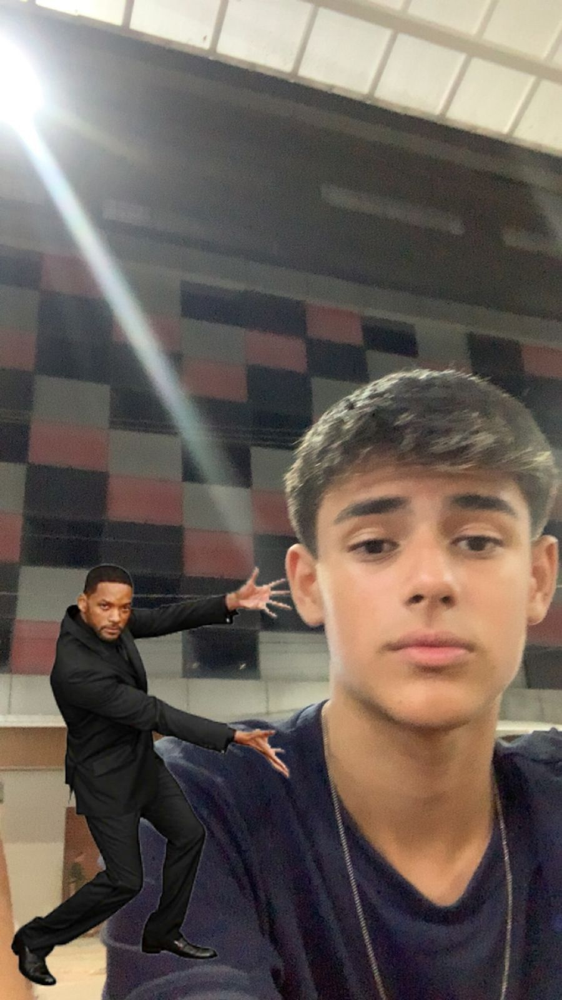
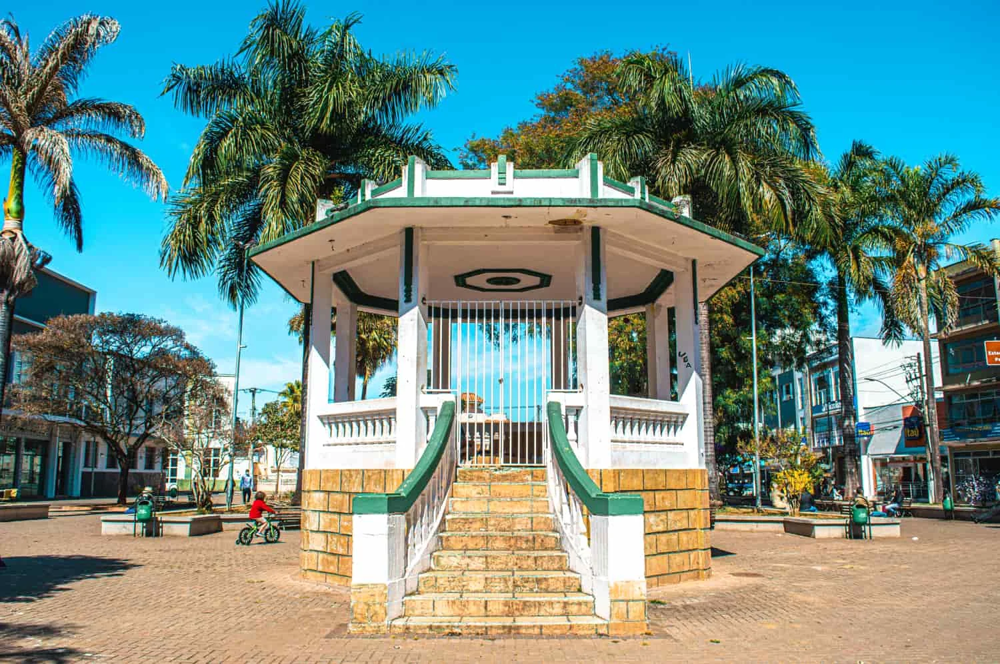
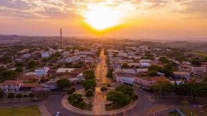
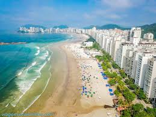
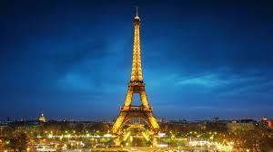
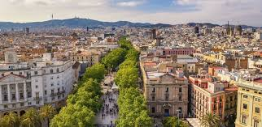
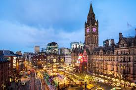

Ter viajado para esse lugar foi uma das minhas melhores escolhas, fui visitar uma amiga de infância e não me arrependi, voltei lá em mais duas oportunidadese foi incrivel gostaria de ir novamente o quanto antes, para ter um tempo de paz e calmaria misturado com felicidade e liberdade.Três corações - Minas Gerais📍

Pérola do parana é um lugar calmo tranquilo e onde
posso encontrar minha família, me divertir e agir
como as crianças de antigamente,andando de bicleta
até tarde da noite sem muitas preucupações.
Peróla - Paraná📍

Já fui diversas vezes para guarujá algumas ainda
criança, achei um lugarmuito cheio e animado,
aguá muito gelada lá não é um lugar para relaxar ,
entretanto para se divertir com amigos e familia
eu acho um dos melhores lugares além de deixar
lembraças inesquecíveis.
Guarujá do sul - Santa Catarina📍

Muitos elogiam e dizem ser muito bonito , além de ser a "capital do amor" e isso me despertou curiosidade, tambem quero ir para conhecer o estadio do PSG (um time de futebol).Paris - França📍

Barcelona é um lugar muito bonito e sempre, gostei da espanha e tenho de conhecer o camp nou estadio do Barcelona time catalão que sou apaixonado desdede pequeno, tambem sonho em conhecer as praias.Barcelona - Espanha📍

Manchester é uma cidade da Inglaterra que é um país que sonho visitar por diversos motivos um deles é o idioma que é muito importante, outro é que como um amante de futebol gostaria de vistar diversos estadios e frequentar diversos jogos dos grandes times europeus.Manchester - Inglaterra📍